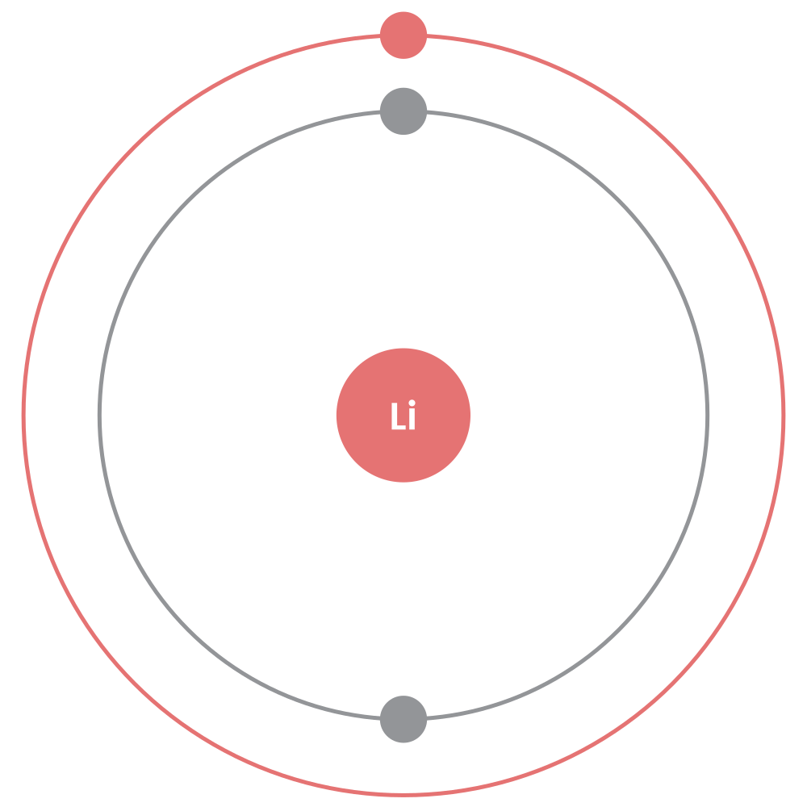

--- 
layout: inner 
---

<div class="flex">
  <div class="flex_item one left">
    <div class="container">
      

      <h3>Discovery</h3>
      <p>Discovered in 1790 on the Swedish Island of Utö by the Brazilian, Jozé Bonifácio de Andralda e Silva. Later given the
        name Lithium by Johan August Arfvedson of Stockholm in 1817. In 1855 Robert Bunsen and Augustus Matthiessen began
        to obtain it in bulk through the electrolysis of molten Lithium Chloride. Lithium's chemical symbol and name come
        from the greek word for stone, lithos.</p>
      <h3>Characteristics</h3>

      <iframe src="https://www.youtube.com/embed/Vxqe_ZOwsHs" frameborder="0" gesture="media" allow="encrypted-media" allowfullscreen></iframe>
      <table>
        <tr>
          <th>Group</th>
          <th>Period</th>
          <th>Block</th>
          <th>Number</th>
          <th>Configuration</th>
        </tr>
        <tr>
          <td>1</td>
          <td>2</td>
          <td>s</td>
          <td>3</td>
          <td>[He] 2s1</td>
        </tr>
        <tr>
          <th>Melting Point</th>
          <th>Boiling Point</th>
          <th>Density</th>
          <th>Mass</th>
          <th>Key Isotope</th>
        </tr>
        <tr>
          <td>180.50°C</td>
          <td>1342°C</td>
          <td>.534 g cm</td>
          <td>6.94</td>
          <td>7Li</td>
        </tr>
      </table>
      <p>
        Lithium is a soft, silvery metal and is easily cut with a knife. Lithium has the lowest density of all metals. Like the rest
        of the Alkali Metals, it reacts vigourously with water and degrades quickly in air, because of this it's stored in
        oil. Lithium burns with a red flame.</p>
      <p>Lithium has a relative supply risk of 6.7, meaning that it's fairly abundant and highly sustainable. It's primarily
        produced in Austrailia, followed by Chile and China.</p>
      <table>
        <tr>
          <th>Atomic Radius</th>
          <th>Electron Affinity</th>
          <th>Covalent Radius</th>
          <th>Electronegativity</th>
        </tr>
        <tr>
          <td>1.83</td>
          <td>59.633</td>
          <td>1.30</td>
          <td>0.98</td>
        </tr>
      </table>
      <h3>Uses</h3>
      <p>Primarily, Lithium is used in Lithium Ion batteries, used in mobile phones, laptops, cameras and other devices.</p>
      <p>Lithium is also often combined with aluminium and magnesium to create light and strong alloys used in aircraft, bicycles
        frames and high-speed trains. Magnesium - Lithium alloys are also suitable for use in armor plating on military vehicles.</p>
      <p>It's also been used to treat sufferers of Bipolar disorder in the form of Lithium Carbonate however due to it's toxicity
        Lithium is administered in small doses.</p>
      <a href="sodium.html">Next: Sodium &#9654;</a>
    </div>
  </div>
  <div class="flex_item right">
    
  </div>
</div>